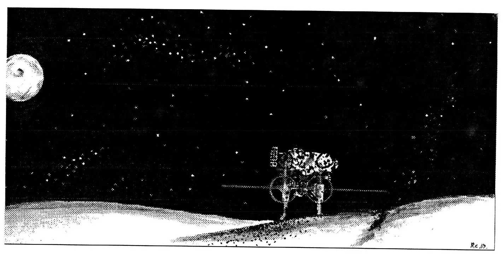

What is a Role-Playing Game?
A role-playing game is an interactive story like a novel or a - except the actions of the players change the course of the adventure. players interact with the universe through imaginary extensions of called characters. These characters are people living in the that the players control. Unlike regular games, RPGs change each time play because the story is separate from the rules, so each time you use a story the adventure changes. With role-playing games you never have the adventure twice. That is what makes role-playing such a vivid, exciting unique experience - you never know what to expect.
Unique features of Genesis
Flexibility of rules and genre
The rule systems in Genesis were created to allow for multiple of complexity. This is achieved by a basic system to which modifiers added until the the system simulates reality. The transition from a simple a complex system, using modifiers, gives a continuous spectrum of between the two extremes. As a GM you are free to use any of the , making the system as complex as you want or as simple as you need. Genesis universe also encompasses many genre because it is just that - a universe. Centred around Earth the action is not confined to any one with any one race. This gives an almost infinite variety of adventures you and your players to explore.
Ease of revision and addition
Genesis is bound in a three ring binder to allow for frequent and additions. This eliminates the testament to wasted money that in every role-player's closet, game books and revisions that are because they have been replace by newer editions. A three ring binder, the other hand, makes revision as easy as removing the old pages and clipping the new ones. You always have an updated rule book no matter how long ago you it and you won't have to buy a whole new game just to get 15 new pages - with Genesis.
Conventions
The Metric system
Before proceeding into this chapter it is necessary to discuss the that were used while preparing this game. Genesis uses the Metric of measurement. The Metric system was chosen for three important - convenience, conversion, and consistency. The Metric system has all these three qualities and all measurements in Genesis will be in metric. A of measurement must be convenient, it should be easy to work with and in design. The metric system is both. It has only three basic units, meter, the gram, and the litre. The other part of the system is simply a of saving space and to simplify the writing of measurements. Each of the units can have a prefix added to it to tell roughly the scale of the . Even if you do not know the actual measurement you can get a of the size by the units it is in. For instance you would never measure tree's height in centimetres, you would use meters. The prefixes, their abbreviations and the degree to which they are greater than the base measure is below. Metric is convenient because only these three units and the twelve gives the user a working knowledge of the metric system. In the area conversions between different prefixes the metric system exceeds over the system. To convert you simply multiply or divide by a factor of 10 or move the decimal to the left or to the right. No matter which unit you converting to you always convert in the same way and use the same prefixes. consistency in the metric system makes it easy to learn and use. There are books and encyclopedias that give descriptions of how the metric system and conversions to metric. For convenience the Metric system was used in creation of Genesis. If this system is difficult for you, please convert numbers that you use into the system of measure with which you are most comfortable.
| Prefix | Abbreviation | Scale | Power | English |
|---|---|---|---|---|
| tera | T | 1,000,000,000,000 | 1012 | one-trillion |
| giga | G | 1,000,000,000 | 109 | one-billion |
| mega | M | 1,000,000 | 106 | one-million |
| kilo | K | 1,000 | 103 | one-thousand |
| hecta | H | 100 | 102 | one-hundred |
| deca | D | 10 | 101 | ten |
| BASES | meters, grams, litres | 1 | 100 | one |
| deci | d | .1 | 10−1 | one-tenth |
| centi | c | .01 | 10−2 | one-hundredth |
| mili | m | .001 | 10−3 | one-thousandth |
| micro | μ | .000,000,1 | 10−6 | one-millionth |
| nano | n | .000,000,000,1 | 10−9 | one-billionth |
| pico | p | .000,000,000,000,1 | 10−12 | one-trillionth |
Tables
Following chapters all contain rules and rule systems, which use and tables regularly. To keep the body text uninterrupted the tables that belong with each system have been placed at the end of each chapter. If you wish, you may move them to the place in the book that you find most convenient. instance some GMs like to have the tables mixed in with the rules, while would keep them together at the end of the book in one large 'Tables' . The choice is yours.
Dice Rolls
Every role-playing game uses abbreviations to tell the players and Game Master which dice to use. Other games use the nomenclature - 2d8 this probably arose from people saying "Use 2 dice that are 8 sided". In Genesis however, all of the rules are designed to work with 10 sided dice, so really is no need to say what kind of dice to use. It is necessary however, to describe how to interpret the results of the dice rolls. There are different ways of using and interpreting the results from two ten sided . One way is to roll one ten sided die to find a number out of ten. Another would be to roll two ten sided dice and add the results get a number out of twenty. For each of these rolls we use the format:
1:10sd and 2:10sd
You could point out that we are telling the reader which dice to use and we said we were not going to do this. But, there are examples in Genesis where the the dice rolls are written could become confusing. For example you could two 10 sided dice but interpret the results differently than before. If you one of the die to be the "tens" die and the other to be the "ones". When roll the results are 1 and 5 you could interpret the result as 15 - a number of 100 possibilities - a percentage. In this case the abbreviation would be 2:10sd as well. To avoid confusion dice rolls which should be as percentages will be written like this:
1:100sd
(If the roll was 0,0 then the result would be 100 however a 0, 5 would only be 5 105). you wanted a number between 1 and 50 you could either roll 5,10 sided dice or 1 percentage die and divide the result by 2. In either case the results be roughly the same but they would be written like this
5:10sd or ½:100sd
Sometimes you will see rolls abbreviated in this format:
1:10sd +5 or 1:100sd +15
For these, you would roll as normal and then add the number to the result. For the result of the roll of the first example was 7, you add 5 to this the result is 12. Finally, there is one other format of dice roll abbreviation that we have not yet. In this case you would roll one die called the "hundreds", one "tens", and one called "ones" and you would interpret the results out of . So, if you rolled a 0 one the first die, a 5, and a 7 you would say that the result was 57. this case the abbreviation used would be:
1:1000sd
(The same convention as in the percentile roll applies, if you were to roll 0, 0, 0 then the result would be 1000). We have seen that the way in which we use abbreviations is not so much to tell, the reader, which dice to use but how to interpret the result of the dice.
